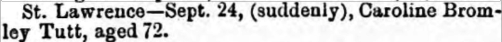
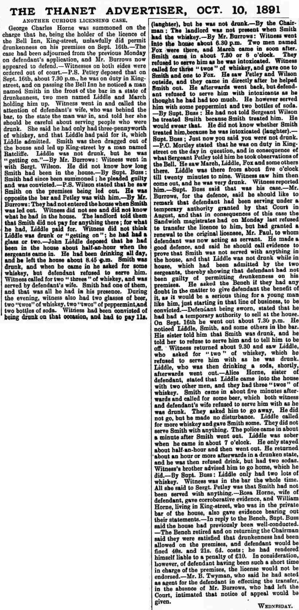
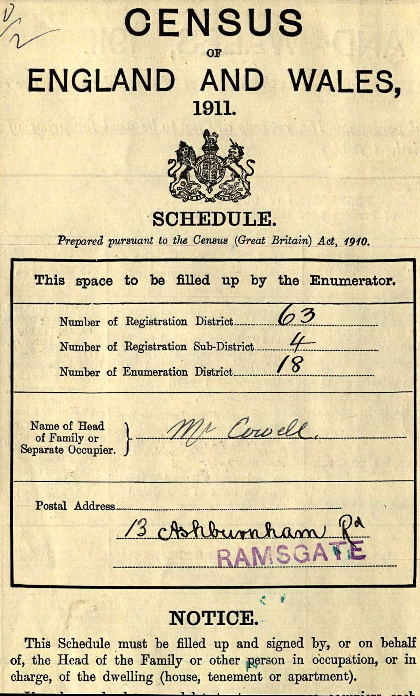
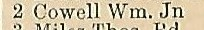
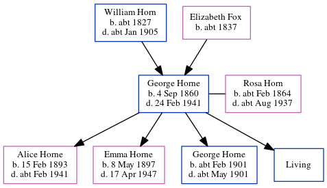

George Charles Horne 1860 - 1941
[ Home ] | [ Calendar ] | [ Surnames Index ] | [ Census Index ] | [ Family History ]A barman and auctioneer's porter and the child of William Horn (a policeman) and Elizabeth Fox, George Horne, the first cousin three-times-removed on the father's side of Nigel Horne, was born in London, England on Sep 4, 18601,2,3,4, was baptized in Whitechapel, London, England on Oct 28, 1860 and married his cousin on his father's side Rosa Horn (with whom he had 4 children: Alice Rose, Emma Elizabeth, George Charles and Sidney Albert, along with 1 surviving child) in St Lawrence, Thanet, Kent, England on May 6, 18912.
During his life, he was living on Batty Street in Whitechapel on Apr 7, 18619; at 11 Batty Street in Whitechapel on Apr 2, 187110; at 62 Boundary Road, Ramsgate, Kent on Mar 31, 19018 (when he was living with his); at 77 Hardres Street, Ramsgate, Kent on Apr 2, 19117 and on Jun 19, 19213; and at 32 Chapel Road, Ramsgate, Kent in 1936, on Sep 29, 19394 and in 1941. On Jun 19, 1921 he was working at Scarlett Y Goldsack, Auctioneers at 36 High Street, Ramsgate, Kent, England.
He died on Feb 24, 1941 in Thanet5,6.
Parents
- William was born c. 1827
- Elizabeth was born c. 1837
Children
- Alice Rose was born on Feb 15, 1893
- Emma Elizabeth was born on May 8, 1897
- George Charles was born c. Feb 1901
Citations
- 1901 England Census Online publication - Provo, UT, USA: The Generations Network, Inc., 2005.Original data - Census Returns of England and Wales, 1901. Kew, Surrey, England: The National Archives of the UK (TNA): Public Record Office (PRO), 1901. Data imaged from the National
- 1911 England Census Online publication - Provo, UT, USA: Ancestry.com Operations, Inc., 2011.Original data - Census Returns of England and Wales, 1911. Kew, Surrey, England: The National Archives of the UK (TNA), 1911. Data imaged from the National Archives, London, England.
- 1921 Census Of England & Wales - Findmypast (was age 60 and the head of the household)
- 1939 Register - Findmypast (was recorded at this address)
- England & Wales Government Probate Death Index 1858-2019 - Findmypast
- England & Wales deaths 1837-2007 - Findmypast
- 1911 Census for England & Wales - Findmypast (was age 50 and the head of the household)
- 1901 England, Wales & Scotland Census - Findmypast (was age 40 and the head of the household)
- 1861 England, Wales & Scotland Census - Findmypast (was age 0 and the son of the head of the household)
- 1871 England, Wales & Scotland Census - Findmypast (was age 10 and the son of the head of the household)
Media
George Charles Horne - probate
Thanet Advertiser 26 Sep 1891

Thanet Advertiser 10 Oct 1891

1871 UK Census

1911 UK Census page 1

1911 UK Census page 2

1936 Isle of Thanet Kelly's Directory

Kent, Canterbury Archdeaconry marriages 1538-1928 - GBPRS/CANT/M/97022169/1
Kent, Canterbury Archdeaconry banns 1754-1928 - GBPRS/CANT/M/94005455/1
1911 Census for England & Wales - GBC/1911/RG14/04521/0043/1
1939 Register Transcription - TNA-R39-1765-1765E-006-27
England & Wales births 1837-2006 - BMD/B/1860/4/AZ/000518/143
England & Wales deaths 1837-2007 - BMD/D/1941/1/AZ/000614/082
1901 England, Wales & Scotland Census - GBC/1901/0007455217
England & Wales marriages 1837-2008 - BMD/M/1932/4/AZ/000571/035
London, Docklands and East End Baptisms, 1558-1933 - GBPRS/B/902290373/1
1939 Register Transcription - TNA-R39-1765-1765E-006-26
1939 Register - TNA/R39/1765/1765E/006/28
England Births & Baptisms 1538-1975 - R_960798661
1861 England, Wales & Scotland Census Transcription - GBC-1861-0001771511
England & Wales Government Probate Death Index 1858-2019 - GBOR/GOVPROBATE/C/1941-1941/00071313
England & Wales marriages 1837-2005 - BMD/M/1891/2/AZ/000142/270
1921 Census of England & Wales - GBC/1921/RG15/04474/0051/01
Family Tree
Generated by ged2site. Last updated on Jun 11, 2024